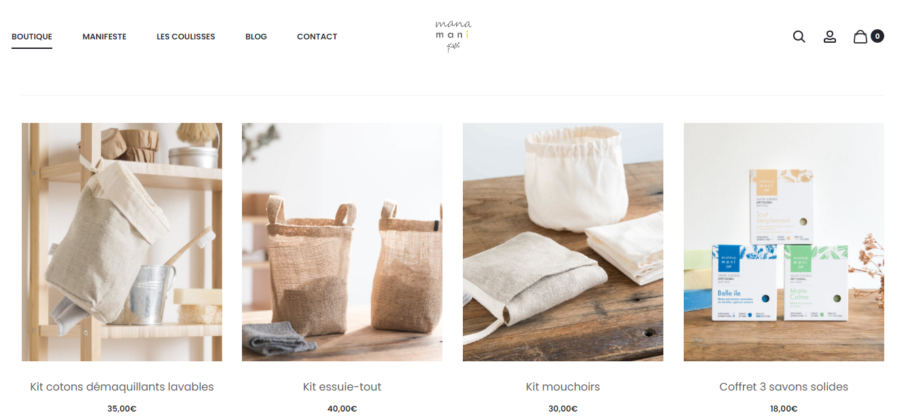

ManaMani, une boutique en ligne éco responsable.
ManaMani est une boutique en ligne qui réalise des produits zéro déchets. Ces produits sont accessibles à tous, ce qui permet à chacun d’entre nous de pouvoir les intégrer plus facilement dans notre quotidien. Maud est la fondatrice de ManaMani. Elle a deux employés : Alice et Tim. Tous les trois ont conscience de la situation environnementale actuelle. Ils ont alors décidé d’apporter et de créer des produits bons pour la peau et pour la planète. Je suis donc partie à la rencontre d’Alice, qui a accepté de m’en dire plus sur la boutique.
La création de Mana Mani

Mana Mani a vu le jour en Mai 2018. Mana est le diminutif de ManaMani qui signifie « demain » en Espagnol et Mani qui signifie les mains en Italien. En associant les deux, ils ont retrouvé une idée commune qui est « Demain, faites plus de choses avec vos mains” ». Autrement dit, ils voulaient retourner à l'essentiel de façon facile et agréable pour prendre soin de soi, de la planète et des objets du quotidien.
Le zéro déchet, un mode de vie plus simple et qui respecte l’environnement.
Le zéro déchet représente pour eux un mode de vie plus respectueux de l'environnement et de la planète en revoyant sa façon de consommer. Ils conçoivent, fabriquent et distribuent des produits pour un quotidien sans déchet. Ils proposent des produits pratiques qui s'intègrent facilement dans la routine du quotidien. Ils font également des produits esthétiques et intemporels car « l’écologie n’exclut pas la coquetterie mais ne fait pas bon ménage non plus avec les effets de mode » d’après Alice. Enfin, leurs produits se doivent être durables dans leur conception, dans leur fabrication, dans leur utilisation ainsi que dans leur fin de vie. Donc éco-responsable du début à la fin, un vrai plus pour la planète et pour les clients !
Le kit démaquillant, le produit phare de la boutique.
Bien que la boutique contienne de nombreux produits tout aussi indispensable les uns que les autres et notamment les pailles en inox qui remplaces celles en plastique, Lise me livre que le produit indétrônable reste le kit démaquillant. Comme pour tous leurs produits il a été pensé pour que le geste reste le même. Imaginé comme un distributeur, il est constitué d’un pochon en lin bio, d’un filet de lavage 100% coton bio intégré et amovible assorti au pochon et de 15 cotons démaquillants bifaces -côté molleton et côté éponge- en Tencel. L'idée est de ranger les cotons démaquillants à l'intérieur du pochon. Lorsque l'on souhaite se démaquiller, on les attrape par la petite fente située en dessous de celui-ci. Une fois démaquillé, on met le coton dans le filet de lavage intégré en haut du pochon. Grâce au fond du filet en tissu, les cotons sales ne touchent pas les propres. Lorsque l'on souhaite laver ses cotons démaquillants, on retire le filet de lavage du pochon que l'on met dans la machine à laver après avoir fait un nœud. Vous pouvez retrouver des explications sur leur compte Instagram @ManaMani Il leur est donc apparu évident qu’acheter moins mais mieux, que réutiliser plutôt que jeter était une réponse simple et facile face aux enjeux environnementaux de notre société de consommation.Pour finir, Elise nous donne un conseil pour se mettre au zéro déchet : « Il est important d'intégrer un seul geste à la fois pour qu'il devienne pérenne. Limiter les produits à usage unique, éviter le plastique quand c'est possible, faire durer ses produits en les utilisant au maximum. » Un conseil intelligent et judicieux à appliquer dès maintenant !
Nous pouvons également trouver de bons conseils sur leur blog pour un transition zéro déchet tout en douceur.
Lien du site : Manamani.com
Ci joint une vidéo retracant l'histoire de ManaMani de sa création à aujourd'hui :